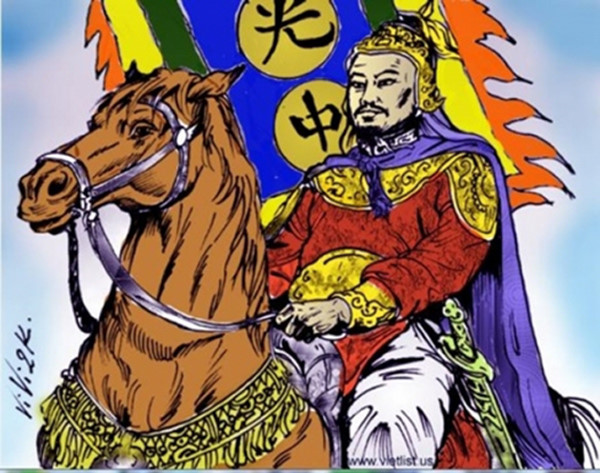

“Triều đình riêng một góc trời
Gồm hai văn võ, rạch đôi sơn hà...”
Nguyễn Du
(Đoạn Trường Tân Thanh)
Luận về Tây Sơn và Nguyễn Huệ, sử gia Trần Trọng Kim đã khách quan phân tích lịch sử về anh hùng:
“... anh em Nguyễn Nhạc là người dân mặc áo vải, dấy binh ở Ấp Tây Sơn, chống nhau với Chúa Nguyễn đã lập nghiệp ở đất Quy Nhơn. Tuy rằng đối với họ Nguyễn là cừu địch, nhưng mà đối với nước Nam, thì chẳng qua cũng là một người anh hùng lập thân trong lúc biến loạn đó mà thôi!
Còn như Nguyễn Huệ là Vua Thế Tổ nhà Nguyễn Tây Sơn, thì trước giúp anh bốn lần vào đánh đất Gia Định đều được toàn thắng, phá hai vạn quân hùm beo của Xiêm La, chỉ còn được mấy trăm lủi thủi chạy về nước; sau lại ra Bắc Hà, dứt họ Trịnh, tôn vua Lê, đem lại mối cương thường cho rõ ràng. Ấy là đã có sức mạnh mà lại biết làm việc nghĩa vậy.
Sau vua Chiêu Thống và Bà Hoàng thái hậu đi sang kêu cứu bên Tàu, vua nhà Thanh nhân lấy dịp ấy, mượn tiếng cứu nhà Lê, để lấy nước Nam...
Vậy nước đã mất, thì phải lấy nước lại, ông Nguyễn Huệ mới lên ngôi Hoàng đế, truyền hịch đi các nơi, đường đường chính chính, đem quân ra đánh một trận, phá 20 vạn quân Tàu, tướng nhà Thanh là Tôn Sĩ Nghị phải bỏ cả ấn tín mà chạy, làm cho vua tôi nước Tàu khiếp sợ, tướng sĩ nhà Thanh thất đảm. Tưởng từ xưa đến nay nước ta chưa có vổ công nào lẫm liệt như vậy! Vả đánh đuổi người Tàu đi, lấy lại nước mà làm vua thì có điều gì mà trái đạo?”
(Trần Trọng Kim, Việt Nam Sử Lược. Quyển II, trang 128-129)
Cho nên với Tây Sơn, Nguyễn Huệ, Quang Trung không còn là chuyện “Chính Thống” hay “Ngụy Triều” mà chỉ còn những bức tranh khách quan của Lịch sử. “Kẻ bố y” [1] cũng là đại tướng, khách vườn trầu cũng vẫn đế vương, người anh hùng xông pha Nam Bắc cũng là một nghệ sĩ chân truyền... chẳng còn gì để phân biệt ngụy triều, chính thống!

.“Kẻ bố y”, không bao giờ quên mình là “dân áo vải”, nên trong bài chiếu “đăng quang” Quang Trung vẫn không quên bản thân với giấc mơ Phạm Lãi, dù cho luôn phải múa gươm lên ngựa... để sau đó chỉ mấy ngày tiến quân ra Bắc tận diệt quân Thanh:
“Trẫm là kẻ áo vải đất Tây Sơn, không có một tấc đất, vốn không có chí làm vua. Chỉ vì lòng người chán ghét loạn lạc, mong có vị minh chúa để cứu đời, yên dân. Cho nên tập họp nghĩa quân, xông pha chông gai, phá núi mở rừng, giúp đỡ Hoàng đại huynh rong ruổi binh mã, gây dựng nước ở cõi Tây, dẹp Tiêm La, Cao Miên ở phía Nam, rồi hạ thành Phú Xuân, lấy Thăng Long. Bản ý chỉ muốn quét trừ loạn lạc, cứu dân trong chốn nước lửa, rồi trả nước cho họ Lê, trả đất cho Đại huynh, ung dung áo gấm hài thêu, ngắm cảnh yên vui ở hai cõi đất mà thôi...”
(Thơ văn Ngô Thì Nhậm, quyển 2, trang 108, Mai Quốc Liên dịch, trích từ “Sông Côn Mùa Lũ” của Nguyễn Mộng Giác, quyển 4, trang 1822)
Từ “Kẻ bố y”, người “dân áo vải” lên ngôi Hoàng đế, phất ngọn cờ đào đánh tan 20 vạn quân Thanh vào Tết Nguyên Đán, Kỷ Dậu (1789).
“Bảy vạn quân thủy bộ đã tụ họp đông đủ ba mặt dưới đàn Nam Giao. Từ trên chóp Ba Tầng nhìn xuống, trước hết là hằng hà sa số những chấm đen di động liên tục, như một đàn kiến xếp trật tự theo từng vạt vuông vức. Cờ Đào nhuộm hồng khoảng cách sát chân đồi, và mỗi khi mặt trời chui ra khỏi những đám mây lại lơ lửng, thì nắng sáng chiếu lên các lưỡi gươm giáo, biến vùng đất bằng phẳng dưới đó thành một vùng dát bạc lấp lánh.
Trên Đàn Nam Giao, màu cờ sắc áo sặc sỡ... Lá Cờ Đào thật lớn phất phới trên Kỳ Đài, ngay đỉnh đồi, biến mọi vật trên đàn trở nên hồng hào, hớn hở...”
(Nguyễn Mộng Giác - Sông Côn Mùa Lũ, quyển 4, trang 1857)
Nhìn vào trận đánh, với oai phong lẫm liệt của Quang Trung và khí thế anh hùng của các đạo quân tốc chiến tốc thắng của Việt Nam:
“Vua Quang Trung cỡi voi đi sau đốc chiến, quân An Nam vào đến cửa đồn, bỏ ván xuống đất, rút dao ra, xông vào chém, quân đi sau cũng kéo ùa vào đánh. Quân Tầu địch không nổi, xôn xao tán loạn, xéo lẫn nhau mà chạy. Quân Nam thừa thế đánh tràn đi, lấy được các đồn, giết quân Thanh thây nằm ngổn ngang khắp đồng, máu chảy như thác nước. Quân các đạo khác cũng đều được toàn thắng.
Quan nhà Thanh là Đề đốc Hứa Thế Hanh, Tiên Phong Trương Sĩ Long, Tả Dực Thượng Duy Thăng đều tử trận cả; quan phủ Điền Châu là Sầm Nghi Đống đóng ở Đống Đa, bị quân An Nam vây đánh cũng thắt cổ mà chết!
Tôn Sĩ Nghị nửa đêm được tin báo, hoảng hốt không kịp thắng yên ngựa và mặc áo giáp, đem mấy tên lính kỵ chạy qua sông sang Bắc. Quân các trại nghe tin như thế, xôn xao tan rã chạy trốn, tranh nhau sang cầu, một lát cầu đổ, sa cả xuống sông chết đuối, sông Nhị Hà đầy những thây người chết!”
(Trần Trọng Kim - Việt Nam Sử lược, quyển II, trang 133-134)
Quang Trung tiến quân vào Thăng Long. Khói thuốc súng còn tỏa nghi ngút khắp trời. Đó là chiều Mồng Năm Tháng Giêng năm Kỷ Dậu. Chiến thắng sớm hơn một ngày dự liệu của Quang Trung. Dân Thăng Long đổ ra kinh thành để đón mừng Đại Đế, nhưng cả đoàn tượng binh đi qua mà không ai nhìn được ra vua.
“Vì chiếc chiến bào màu đỏ của Vua, cùng chiếc khăn vàng thúc quân của đại đế đã đen sạm màu thuốc súng!”
(Đại Nam)
Đó là chiến thắng oanh liệt Đống Đa, đỉnh cao võ công của Quang Trung trên hành trình chiến thắng từ Quy Nhơn - Rạch Gầm - Xoài Mút - Phú Xuân để tiến đến Thăng Long đưa uy danh của Nguyễn Huệ lên hàng Đại Đế!
Giấc mơ của Quang Trung theo lời chỉ dạy của La Sơn Phu Tử Nguyễn Thiếp là vận dụng mọi khả năng để trở về nguồn, nơi xuất thân của dòng họ trước đây. Do đấy mà Phượng Hoàng Trung Đô được xây dựng giữa cảnh núi Hồng, sông Lam, chuẩn bị cho Triều đại một tương lai “Ba Thục” khi cần đối phó với bất cứ cuộc tiến quân nào từ Bắc hoặc từ Nam.
Nhưng tiền duyên lịch sử như không hỗ trợ cho hoài bảo anh hùng, nên chỉ Ba Năm Bảy Tháng sau đỉnh chiến thắng tuyệt vời, Quang Trung đã vĩnh viễn rời bỏ cuộc đời, để lại Giấc Mơ Phượng Hoàng cho một triều đình trên đường gãy cánh. Ngày 29 tháng 7 năm Nhâm Tý (16-9-1792) trước khi băng hà vào giờ Dạ Tý, Quang Trung đã di chúc cho Trần Quang Diệu những lời tuyệt vọng của một ý thức lãnh đạo, quán triệt được tình hình trong thế nước qua phân lúc bấy giờ còn trong vòng nội chiến. Đó là sự kiện cần tổ chức tang lễ cấp bách, để dời đô ngay về Nghệ An, nơi Phượng Hoàng Trung Đô đang hình thành mà từ lâu nay chưa hoàn tất được!
“Chôn cất cho mau, nội trong một tháng, rồi dời kinh về Phượng Hoàng Trung Đô, nếu không, quân Gia Định kéo tới, các ngươi sẽ không có đất mà chôn đâu!”
(Liệt Truyện, Thực lục)
Lời tiên tri ấy đã trở thành sự thật vào năm Nhâm Tuất (1802).
Trong bao nhiêu chuyển vần của lịch sử dân tộc qua các cảnh “ngũ liệt, tam phân”, Nguyễn Bỉnh Khiêm đã từng khuyên Nguyễn Hoàng vào tận Hoành Sơn; từng nhắn Trịnh Kiểm nên bảo trọng nhà Hậu Lê; cũng từng đặc biệt dặn dò họ Mạc hãy lên Cao Bằng mà “ẩn triều” cho được một vài đời nữa. La Sơn Phu Tử cũng ân cần với Quang Trung Nguyễn Huệ sau bao lần Hoàng đế chiếu cố đến người ẩn sĩ đất Hồng Sơn:
“Hãy trở về với nguồn cội của núi Hồng, may ra thoát được bao điều oan trái của cảnh nồi da xáo thịt ngay trong tộc họ Tây Sơn; nhờ nước Lam giang rửa sạch bao nhiêu ẩn duyên cùng lịch sử, để cùng núi sông lưu lại một hành trình oanh liệt giữa hai chốn Bắc - Nam”.
Tuy nhiên “Trung Đô” đã được Thái Ất Thần Kinh của Nguyễn Bỉnh Khiêm đi trước, vượt qua mọi thử thách của biến động Bắc Nam, làm cho Phượng Hoàng gãy cánh ngay tại khung trời của hai châu Ô - Lý, không còn tiềm năng để trở lại Trung Đô!
Đầu cha lộn xuống chân con,
Mười bốn năm tròn hết số thời thôi.
(Sấm Ký)
Đó là nghiệp chướng của hai chữ “Tiểu”, trên chữ “Quang” (Quang Trung) và dưới chữ “Cảnh” (Cảnh Thịnh) đã quy kết vận số của một triều đại từ thời oanh liệt đến thời suy vong: Nhâm Thân 1788, Nhâm Tuất 1802, hoàn tất một giai đoạn bi hùng nhất của lịch sử Việt Nam suốt thời kỳ nội chiến.
Miền Đông Bắc Mỹ Châu
Tiết Quý Thu, Quý Mùi 2003
Ban Biên Tập Dòng Việt.
Chú thích:
[1] Quang Trung luôn tự xưng là “Kẻ bố y”.
[2] Ngọc Hân trong “Ai Tư Vãn” nói về Nguyễn Huệ là dân “áo vải cờ đào...”